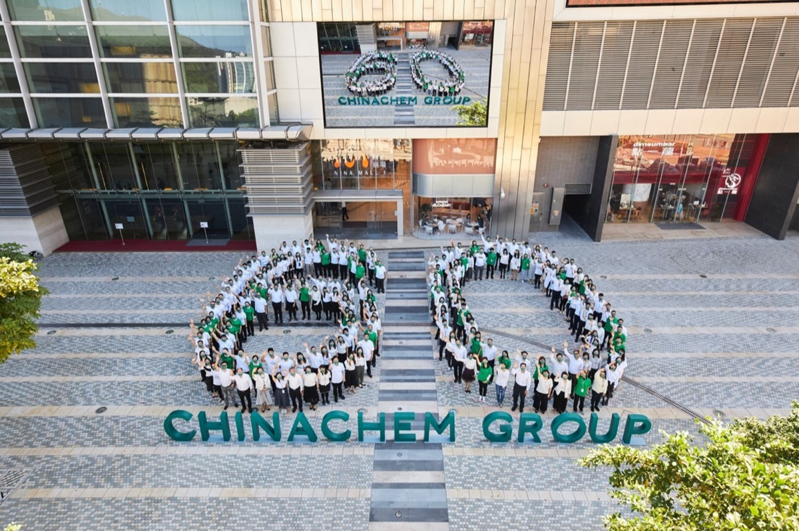
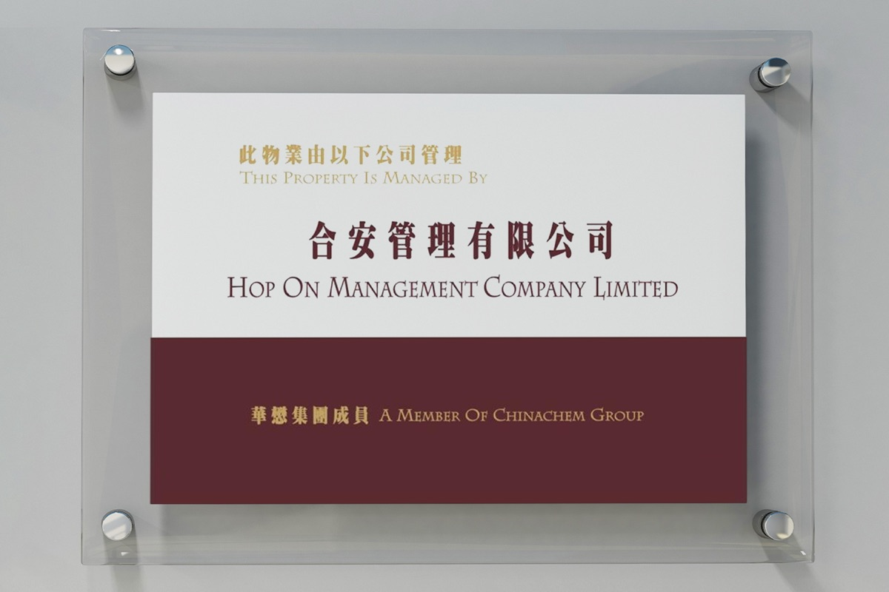
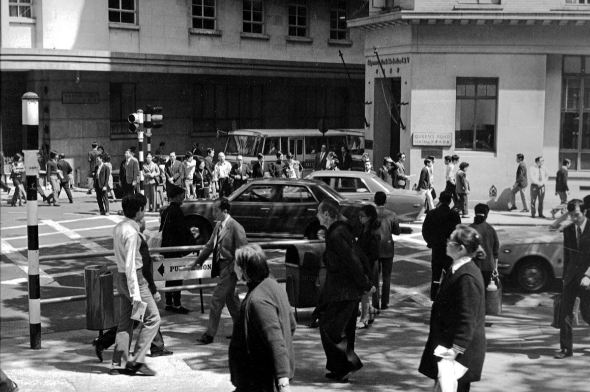

Chinachem Group Website Rebrand
Timelines
Category
Timelines
Sequences read in order: a stepped process and a history of milestones, each on a track that fills as the reader arrives.
Step timeline
Numbered steps · track fills once on scroll-in
01
Apply
Submit your CV and transcript online
02
Screening
Applications reviewed by the hiring functions
03
Interview
Meet the team you'd be joining
04
Offer
Successful candidates confirmed
05
Onboarding
Orientation and your eight weeks begin
Interaction notes
- From the How to apply section of the Internship Programme page. The copy is that page's; the behaviour is the component. Use Replay to run it again.
- Layout: one equal column per step on desktop (any number of steps). A dot and a hairline form a continuous track across the row; beneath each dot sit the step number, an h5 title and a small grey description. The first dot is larger and starts lit in ground yellow; the last line ends in a small end dot.
- Scroll-in: plays once, when 40% of the timeline is on screen. The first dot lights, then each line fills left to right in ground yellow over 0.7s at a constant speed; the next dot lights as the fill arrives, and there's a 0.45s pause before the next line sets off. The last line runs on to the end dot. The finished track stays lit and does not replay on scroll.
- Responsive: at 1000px and below the steps stack into a vertical timeline: the dots ride a continuous line down the left edge, content indented beside them, and the same run goes down the line to an end dot beneath the last step.
- Reduced motion: the finished, fully lit track shows straight away.
Milestone timeline
Scroll-drawn spine · alternating branches · milestones wake in turn
2024
Building for a low-carbon century
Sustainability pledges reach across the whole portfolio, pairing green construction with programmes that bring generations together.
2015
Held in trust, for good
Chinachem Group is committed to charitable purposes — the value its places create now flows back to the community.
2007

Nina Tower rises in Tsuen Wan
The Group's flagship twin towers open — a workplace, a hotel and a new heart for the district, and home to our head office today.
1978

Into hospitality
The first hotel venture begins a decades-long presence in Hong Kong's visitor economy.
1960

The first foundations
Chinachem is founded as a family property business in Hong Kong — building homes, and holding on to what it builds.
Interaction notes
- A shortened version of the Milestones timeline on the Our Story page: five of its eighteen milestones, from the most recent back to the founding. Scroll through the stage to see it draw.
- Layout: a central spine with milestones branching off it, alternating right and left. Each milestone pairs a large year beside the spine with a cream card below it: a 3:2 photograph, a title and a short grey description. Alternate cards pull up to interleave the two columns, roughly halving the height. The spine trails off into the hearts mark at its foot.
- Scroll: the spine draws down in green as the page scrolls, its leading edge tracking a point 70% of the way down the screen. Scrolling back up retracts it.
- Milestones waking: until the line reaches them, milestones sit dimmed to 40% with black-and-white photographs. As the line passes a milestone's node, a ground-yellow dot grows on the spine, a hairline branch draws out towards the card, the year brightens, and the card and its photograph return to full strength and colour over 0.6s. They dim again if the reader scrolls back above them.
- Responsive: at 1000px and below the spine moves to the left edge and every milestone branches to the right. On mobile the branch lines drop away and the year and card tighten in beside the spine.
- Reduced motion: the spine shows fully drawn and every milestone shows at full strength and colour.